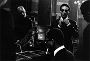
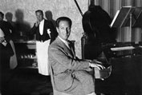
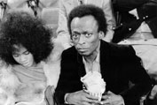
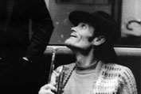
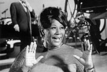

N.9 август 2009
N.9 август 2009

Гениален и разрушителен, Чарли Паркър е водеща фигура в джаза през 50-те. На Въпроса, коя от своите плочи препоръчва, Чарли смирено отговаря: По-добре спестете парите си.
ПрочетиТя не е поппевица, а дива, една отчайващо безнадеждна ексцентричка. Нина Симон е първата жена с награда за джаз. Хулиганка, която се бори за справедливи обществени каузи.
Прочети
Джазът е изображение на моята епоха, епохата на грубата простата, която отрича романтичната сантименталност - казва Гершуин, който определя джаза като народна музика.
ПрочетиСтрахува се от духове, отглежда маймуни, на Шан-з-Елизе, хазартните игри са му слабост. Остава неграмотен, докато колегите му не го понаучават на. френски. Тоба е Джанго
ПрочетиПрисмехулството на съдбата може да те унижи или възкачи. Историята на Мелъди е извън правилата. Тя е за силата, на волята у човека. Или за колебанието на Господ
ПрочетиАко трябва някой да се нарече Мистър Джаз, то това е Луи Армстронг - казва Дюк Елингтън. Луи Армстронг започва от нищото, от самото нищо
Прочети
Днес лошият бездарник от екрана е по-уважаван, отколкото геният, който не се появява по телевизията - казва Майлс Дейвис, един от гигантите в наркотичния свят на джаза
ПрочетиНяма да ми е лесно да бъда това, което съм - отбелязва един от най-добрите басисти в света на джаза Джако Пасториъс. В неговия край има нещо особено тайнствено...
Прочети
В кадър от любим филм. по пода се въргалят винилови плочи. Възможно ли е да се влюбя в тази музика? Да, възможно е. Чет Бейкър има неизяснена съдба. И с това. е още по-мистичен
ПрочетиТой е доста, свит, но с огромно влияние върху своите почитатели. Един музикален критик през 1964 предлага да се издигне кандидатурата на Джон Колтрейн за вицепрезидент на САЩ
ПрочетиПо изключение не е джазмен от гетото. Той е музикантът, който казва: Ако Шекспир беше жив, щеше да бъде поклонник на джаза. Дюк е най-аристократичният джаз композитор
Прочети
Тя може да изпее умопомрачително даже телефонен указател, шегуват се нейните поклонници. Ела. Фцджералд, великолепната първа лейди на джаза....
Прочети